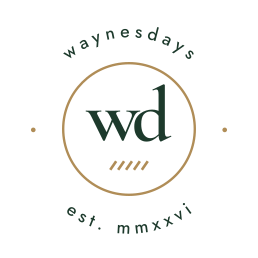
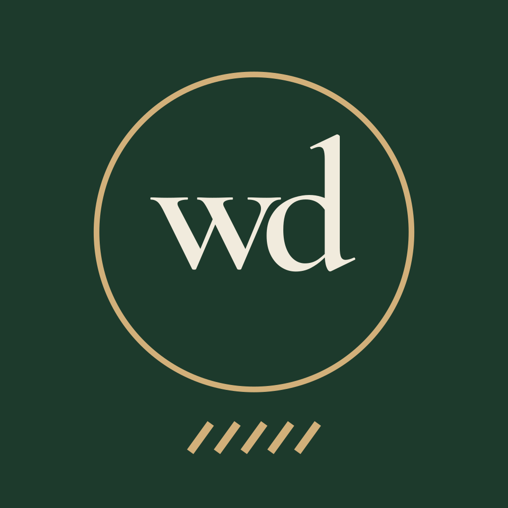

the idea
A personal recipe book with clubhouse manners. Two small things carry the whole brand: a thin brass ring that holds the monogram like a signet, and a tab of five brass stripes that ends every line like a woven label. Everything is lowercase, quiet, and finished in brass.
the tabheritage serif, a fine rule, five stripes
the ringwd, overlapped, in a single brass line
waynesdaysone system, eight marks
logo suite
primary lockupheaders, covers, anywhere there's room
wordmarkwhen the ring is already nearby
signed wordmarkfooters, share cards, print
monogramapp icon, avatar, favicon
open ringloading, empty states, stickers
stacked lockupsquare spaces, splash

sealjar labels, gifts, the last page
labeltags, aprons, merch
clear space & size
Keep a clear margin the width of the w on every side. Nothing else (text, edges, photos) crosses into it.
primary · 140px / 35mm
wordmark · 96px / 24mm
ring · 24px / 6mm
Below these sizes the stripes close up; use the monogram on its own.
colour
Rough balance: mostly cream and green, a little ink, brass as jewellery. CMYK values are straight conversions; proof them before printing.
typography
Display and the wordmark. Medium 500, lowercase for the name, sentence case for recipe titles. Italic for quotes and notes.
Everything you read or tap: steps, ingredients, buttons, labels. Regular 400 and Medium 500; tracked small caps-style labels at 0.2em.
motifs
A fine rule ending in five stripes. Use it under page titles and to close a section. Always five, always leaning right.
One thin brass line. It frames the monogram, avatars and timers. Never filled, never doubled.
The tab repeated. Packaging, the inside cover, loading screens. Behind type, always on a solid panel.
in use
tonight

app icon
jar label
please don't
Capitalise the name. It is always waynesdays.
Stretch, squash or rotate any mark.
Recolour outside the palette.
Add shadows or set it on busy photos without a panel.
The voice matches the marks: lowercase, warm, short. Say what to do and stop. “fold, don't stir.”
the files
Every mark comes in four colourways: green (for light grounds), cream (for green), ink and white (one colour). Type is outlined, so the SVGs work without the fonts installed.
Fonts: Cormorant Garamond and Jost, both under the SIL Open Font License, in ../fonts.